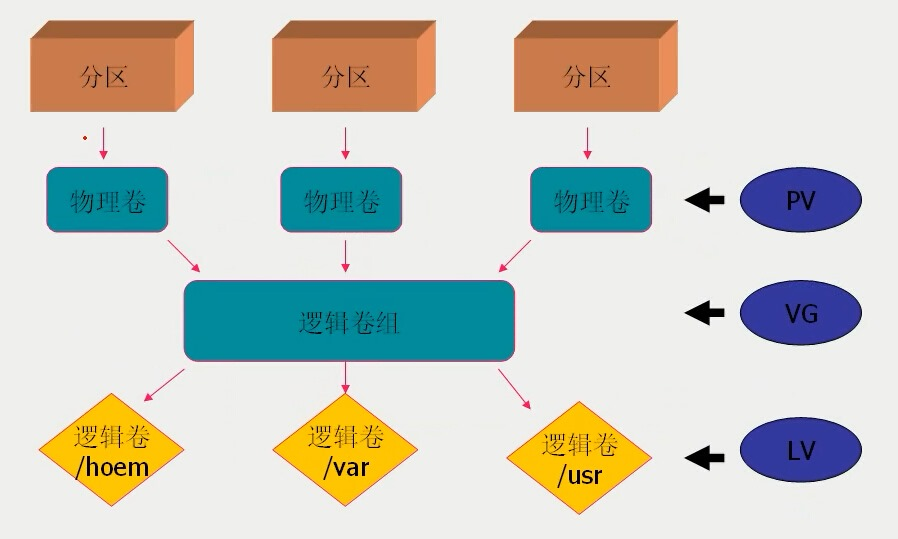

linux lvm 介绍及挂载
Mar 18, 2017LVM 介绍
在前面安装pandoc的时候，想找一台纯净的机器来测试下，于是在openstack上申请了一台机器，结果空间实在太小，于是遇到了需要挂载LVM格式的空间的问题，下面先介绍下什么是LVM吧，现学现卖。
LVM（Logical Volume Manager）逻辑卷管理，在传统的硬盘管理时，进行扩容等操作的时候很困难，这时候，发展了LVM技术，相当于在传统物理硬盘之上加了一层，这样的话，我们上层的应用在访问的时候，不是直接访问物理硬盘，而是访问这一逻辑层，这样的话，上层应用感知不到物理硬盘的变化，在我们增加硬盘进行扩容的时候就方便很多。
逻辑卷的一些概念：
- PV（physical Volume）物理卷： 真实的物理硬盘，或者硬盘上的分区。
- VG （Volume Group）逻辑卷组 ：建立在物理卷之上，一个逻辑卷组至少包含一个物理卷，在我们扩容的时候，就可以动态添加物理卷到逻辑卷组上，一个LVM中可以有一个或者多个逻辑卷组。
- LV （Logical Volume）逻辑卷，逻辑卷建立在逻辑卷组之上，逻辑卷组中未分配的空间可以用来建立新的逻辑卷。
一幅很形象的图表示这三者的关系。 
PE (physical Extent) 物理块，LVM中的最少存储单元，默认为4MB，一个LV最多含65534个PE，因此最大空间为256G，这个PE有点像hdfs中的block.可以通过调节PE的大小来调节LV的大小，但在LVM2中已经没有这个限制了。
LVM的挂载。
- LVM的挂载不想普通硬盘一样使用mount直接挂载，
- 直接挂载时，如mount /dev/sdb2 /mnt 会报错
mount: unknown filesystem type ‘LVM2_member’ - 这是因为LVM的挂载不应该使用LVM的名字挂载而应该使用其中的LV来挂载，步骤如下
- sudo pvs –显示所有的逻辑卷组vg
- sudo lvdisplay
—显示逻辑卷组中的逻辑卷lv,也就是后面我们要挂载的（上层应用直接感知到的正是lv） - sudo mount
/ /mnt完成挂载，可以使用 mount命令来查看挂载的情况。